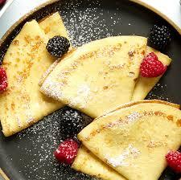

Crepes

This is one of my favorites recipies to cook. Is very easy and quick to make that anybody can do it from home. no need to go anywhere else. On top of that it will give you the most soft, light crepes you will ever have.
The best part about making crepes is that you can add on sweets for a quick dessert or cook a salty filling with some protein for a unique and delicious dinner. My favorite add on are rasphberries, banana, nutella, peanut butter and whipe cream!.
Ingredients
- 3 eggs
- 2 tbsp of butter
- 1 tsp pf sugar
- 230 g of flour
- 1/4 tsp of salt
- 500 ml of whole milk
- 1 tbsp of vanilla extract (for sweet crepes)
Steps
- Melt the butter in the microwave and let it cool down for 5 min
- In aa bowl mix the ingredients listed above including the butter
- Set the mix aside and warm up in medium heat a skillet or none sticky pan
- Grease the pan with a small amount of butter and pure a small ampunt of the mix. Make sure you turl the pan as your pure the mix so it spreads homogeneusly creating a thin layer
- cook each side of the crepe for 2-3 minutes
- once your crepe has a golden color is ready! get creative with your favorite topings and enjoy!